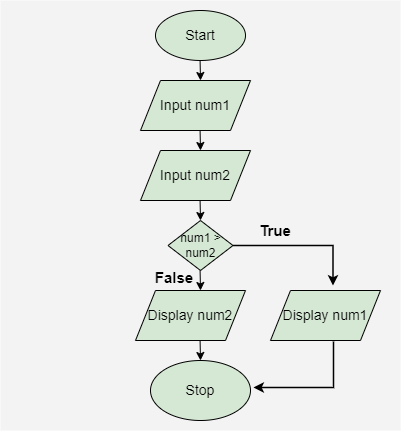

5.9 Flow Charts
A flowchart (also called a control flow chart or control flow diagram) is a graphical representation of how control flows during the execution of a program or algorithm. It uses standard symbols connected by arrows to show the sequence of operations, decisions, and loops.
Flowcharts are widely used as a program-planning tool during the design phase to visualise logic before coding. They represent the control flow within a program, unlike structure charts which represent module architecture (see §5.7).

Standard flowchart symbols
- Terminal (oval): Marks the start or end of a program — "START" and "STOP".
- Process (rectangle): Represents a computation or action — e.g., "Calculate total", "Sort list".
- Decision (diamond): Represents a conditional branch — e.g., "Is x > 0?" with Yes/No paths.
- Input/Output (parallelogram): Represents data input from or output to the user — e.g., "Read n", "Print result".
- Connector (circle): Connects parts of a flowchart on the same page or across pages.
- Flow lines (arrows): Show the direction of control flow between symbols.

Example — software installation flowchart
- Start → Check system requirements → If requirements met, proceed to download; else display error and stop.
- Download installer → Run installer → Accept licence agreement → Choose installation directory.
- Install files → Configure settings → Verify installation → Display success message → End.
- Each step is a process box; each condition is a decision diamond with Yes/No branches.
Example — find the largest of two numbers
Draw a flowchart to input two numbers from the user and display the largest of the two numbers.

Explanation of the above flowchart:
- Start: The process begins with the Start symbol, indicating the start of the program.
- Input num1: The first number, represented as
num1, is entered. - Input num2: The second number, represented as
num2, is entered. - Decision (num1 > num2): A decision point checks if
num1is greater thannum2.- If True, the process moves to display
num1. - If False, the process moves to display
num2.
- If True, the process moves to display
- Stop: The process ends with the Stop symbol, signaling the conclusion of the program.
Flowchart vs structure chart
| Aspect | Structure Chart | Flowchart |
|---|---|---|
| Represents | Software architecture — hierarchical module structure. | Control flow within a program or algorithm. |
| Module identification | Easy to identify different modules of the software. | Difficult to identify separate modules from a flowchart. |
| Data interchange | Shows data interchange between different modules. | Does not represent data interchange among modules. |
| Arrows | Different arrow types for data flow (empty circle) and control flow (filled circle). | Single arrow type for control flow. |
| Sequential ordering | Suppresses sequential ordering of tasks inherent in a flowchart. | Demonstrates sequential ordering of tasks explicitly. |
| Complexity | More complex to construct than a flowchart. | Easier to construct; easier to understand for simple logic. |
When to use flowcharts
- During detailed design to plan the logic of individual modules or algorithms.
- As documentation alongside pseudocode and structure charts in the SDD.
- For deriving test cases — each path through the flowchart represents a potential test path.
- For explaining complex conditional logic to non-programmers.
Limitations of flowcharts
- Large programs produce very complex, hard-to-read flowcharts.
- Flowcharts do not show module hierarchy or inter-module relationships.
- Changes to the program require redrawing the flowchart, which can be time-consuming.
Q: What is a flowchart? Draw and explain its symbols. How does it differ from a structure chart?
Model answer points:
- Define: graphical representation of control flow during program execution.
- Symbols: terminal (oval), process (rectangle), decision (diamond), I/O (parallelogram), connector, arrows.
- Example: software installation or simple algorithm.
- vs structure chart: control flow vs architecture; no inter-module data; simpler to draw.